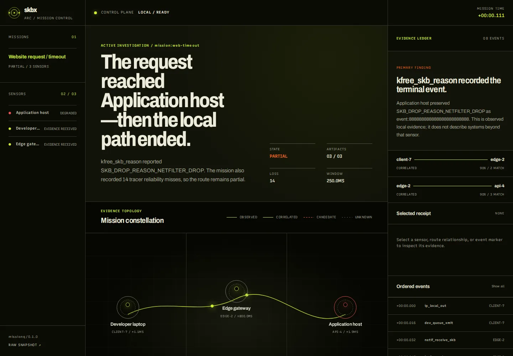

Meet the packet at the hook.
BTF-discovered probes identify the real kernel function and the real struct sk_buff * argument—without guessing field layouts.
skbx plan --probe ip_rcv --jsonLinux packet-path evidence
Trace SKBs through kernel functions, TC, XDP, tunnels, transforms, and drops—then replay the exact route from bounded evidence.
The familiar report
There are a thousand places for certainty to disappear between those two sentences. skbx turns the gap into an ordered evidence stream.
One packet. Five receipts.
BTF-discovered probes identify the real kernel function and the real struct sk_buff * argument—without guessing field layouts.
skbx plan --probe ip_rcv --jsonCapture duration, state, packet parsing, and output are bounded. Every limit is part of the contract, not a footnote.
sudo skbx capture --duration 10 icmpEvery event receives a stable handle. Humans and agents can point to the same observation without paraphrasing it into fiction.
event:8c6f… skb:17 ip_rcvReplay groups ordered events into bounded routes, surfaces consensus and outliers, and turns a capture into a reproducible path.
skbx replay trace.jsonl --format jsonExplanation starts from the handle and retrieves surrounding evidence. The engine reports what happened; AI may explain, never invent.
skbx explain trace.jsonl event:<handle>traceq / 0.1.0
Append-only JSONL. Mandatory header and footer. Stable handles. Explicit reliability telemetry. If the record is incomplete, skbx says so.
"type": "capture_start", "schema": "traceq/0.1.0"
"event": "event:8c6f…", "probe": "ip_rcv"
"skb": 17, "origin": "tracked", "mark": 42
"verdict": "drop", "reason": "DROP_POLICY"
"type": "capture_end", "reserve_failures": 0
Trust is observable
Reserve, recursion, read, decode, enrichment, and output failures remain separate counters.
Capture limits and rotation boundaries are emitted with the trace, so consumers know the observation window.
describe, schema, doctor, and plan make capabilities inspectable before attachment.
routeq / 0.1.0 · experimental
skbx-route extends the evidence discipline outward. It
observes a bounded rootless UDP route, records every response and
timeout, and builds an inspectable dossier for each TTL.
missionq / 0.1.0 · experimental
Arc coordinates bounded traceq artifacts from the Linux
machines you control. Its Mission Constellation keeps direct
observations, cross-host correlations, candidates, and unknown space
visibly separate.

03 sensors 08 receipts partial / loss 14Operational search, answered with evidence
Start at a machine you control. Preserve the local packet path, identify where direct evidence ends, and add another vantage only when the incident crosses that boundary.
Agent-first by construction
An agent can inspect commands, capabilities, limits, invariants, and schemas before it touches the host. Machine output stays on stdout. Diagnostics stay on stderr.
Start with the host, not a hypothesis.
$ cargo install --git https://github.com/copyleftdev/skbx --locked skbx-cli